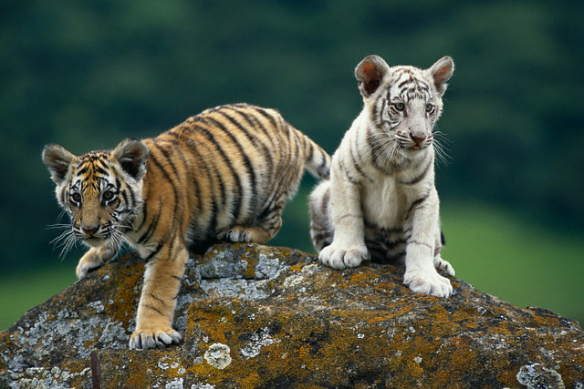

THE FOREST
Forests are an intricate ecosystem on earth which contains trees, shrubs, grasses and more. The constituents of forests which are trees and plants form a major part of the forests. Furthermore, they create a healthy environment so that various species of animals can breed and live there happily.
TOP 3 ENDANGERED ANIMALS
Gorilla
Perhaps one of the most endangered species in the world, these gentle and shy animals were once found extensively in the rainforest. These Gorillas found in the eastern lowland are completely herbivorous. About 80% of their population has gone extinct which is a huge cause of concern. Some of the major causes for their endangerment is habitat encroachment by humans and poaching for the purpose of making talismans, trophies, bush meat, etc. It has also been found that diseases caused by the virus ‘Ebola’ have been a huge reason for their dwindling numbers.
Bengal Tiger

These majestic animals are found in the Sundarbans Regions in India, Bangladesh and China. Extensively poached for their skin, hunting by humans is one of the leading causes for their endangered status. As their skin is extremely valuable, even the methods to hunt them are quite barbaric. Instead of shooting them, which could cause holes in their fur, their meat is poisoned which results in an agonizing and slow death. The governments of the countries that these tigers are native to have failed to implement effective measures to preserve this
Red Panda

The red panda is mostly found in South-Western China and the Himalayas. It is a very curious mammal as even though it has the name ‘panda’ in it; it does not relate much with the panda but more with skunks and raccoons. The red panda has a diet consisting of lizards, fruits, vegetables, bamboos, leaves, birds and eggs. The red panda is a bit heavier than the domestic cat even though it’s similar in size. It is a solitary animal which is usually active throughout the day. Unfortunately, according to IUCN the red panda has been classified as an endangered species due to the massive decline in its population around the world. According to the IUCN red list, it is being stated that the population of the red panda is below 10,000. The major reasons of Red Pandas being endangered are: Habitat fragmentation Habitat destruction Deforestation Poaching (for fur and more) Hunting (as a sport) Depression during inbreeding Poaching and habitat loss are ongoing even after rules and regulations have been passed by several countries such as China and Myanmar to protect the rare red panda from becoming endangered. China passed the Wild Animal Protection Law and Myanmar passed the Wildlife Act of 1994. Habitat loss and poaching are the main reasons why populations of the Red Panda are increasingly being fragmented.